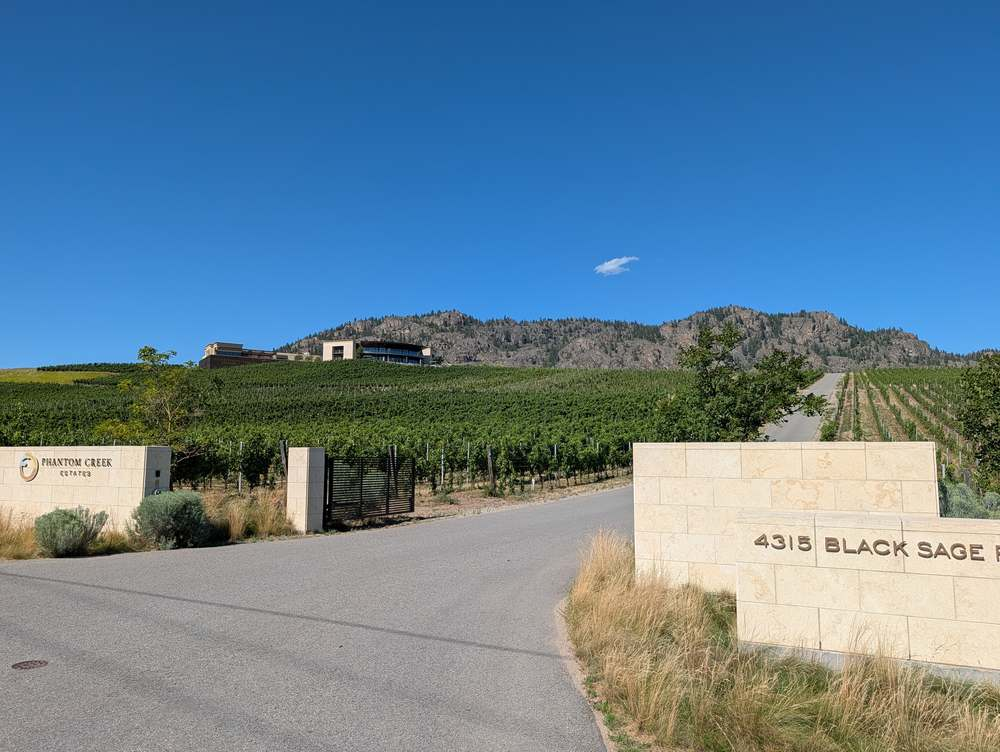

In a desert valley, water rights aren't a footnote — they're the difference between a productive property and a beautiful one that can't grow anything. Here's what to check before you buy.
The South Okanagan is one of the driest regions in Canada — the vineyards, orchards, and green lawns you see are almost entirely the product of irrigation, not natural rainfall. That makes water access a genuinely load-bearing part of any rural or agricultural property purchase here, not a minor detail.
If irrigation matters to you — a vineyard, an orchard, a large garden, or just keeping acreage green through a hot summer — the property's water situation deserves the same scrutiny as its zoning or its septic system.
Enter your details below and the rest of this guide unlocks immediately — plus you'll get a copy emailed to you for reference.
Much of the irrigated land in Oliver and Osoyoos is served by a local irrigation district — a managed system that delivers water to member properties, usually for an annual fee, with allocations based on acreage or historical use. Other properties rely on a private water licence tied directly to a specific water source (a creek, a well, or a diversion), registered with the province.
Managed delivery system, annual fees, allocation based on acreage. Reliable but not unlimited.
Tied to a specific water source, registered provincially, and generally transfers with the land — but must be confirmed, not assumed.
Is irrigation water supplied by a district, a private licence, or a well? If it's a private licence, is it registered and in good standing, and is it actually sufficient for what you want to grow? Don't assume — ask for documentation.
Water licences in BC are generally tied to the land, not the person, so a valid, registered licence typically does transfer with a property sale. That said, "typically" isn't "always" — and irrigation district membership, fee status, and licence standing are all things that should be confirmed in writing during your due diligence period, not assumed from the listing description.
A domestic well for household use and a water licence for irrigation are not the same thing, and a property can have one without the other. If irrigation matters to you, confirm specifically whether the property has irrigation rights beyond a domestic well — a strong household well doesn't necessarily mean enough water for a vineyard or large garden.
The South Okanagan has experienced drought conditions and water use restrictions in recent years, which can affect irrigation allocations, especially for properties on shared systems during peak summer demand. This isn't meant to alarm you — it's meant to be part of the conversation, especially if your plans depend on consistent irrigation.
Has this property's water source or allocation been restricted in past drought years? Is the irrigation district or licence holder aware of current provincial water availability conditions? These questions matter more for a vineyard or orchard than for a lawn, but they're worth asking either way.
A buyer is considering a property with an existing small vineyard block and wants to confirm the water situation before writing an offer.
Illustrative example — not a specific listing. See also our Acreage Buyer's Guide for the broader due diligence picture.
Water rights are one of the few things in a real estate transaction that genuinely can't be fixed after closing if they turn out to be insufficient. It's worth building this into your offer conditions from the start, not treating it as an afterthought.
Let's confirm the water situation before you fall in love with a listing — not after.